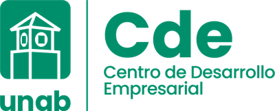
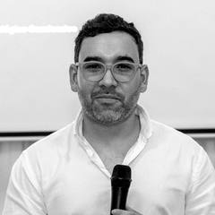

Cocreación y articulación para fortalecer el modelo operativo del CDE
Un programa de consultoría y acompañamiento de cuatro semanas, con dos jornadas presenciales de cocreación, para que las áreas de la Universidad Autónoma de Bucaramanga construyan, juntas, el modelo operativo del nuevo Centro de Desarrollo Empresarial.

de BucaramangaCentro de Desarrollo Empresarial
Entendimiento de la solicitud
Este año la UNAB asume la administración del centro Econova de Bucaramanga, que hasta ahora operaba bajo la Cámara de Comercio de Bucaramanga. Con ese cambio, el CDE inicia una reestructuración de cara a su lanzamiento en 2027.
Hoy varias dependencias de la Universidad ya desarrollan iniciativas, programas y eventos relacionados con emprendimiento y desarrollo empresarial. El reto es que esos esfuerzos converjan en un solo macroplan, en lugar de avanzar en paralelo o duplicarse.
Generar espacios de cocreación y articulación entre las áreas y dependencias de la Universidad para fortalecer el modelo operativo del CDE y amplificar el impacto de sus acciones de emprendimiento y desarrollo empresarial.
- Iniciativas dispersas por dependencia
- Riesgo de duplicar esfuerzos
- Máximo cuatro ejes estratégicos
- Una ruta única de acompañamiento
- Gobernanza clara con resultados medibles
100% interno
Participan exclusivamente actores y dependencias de la Universidad.
Dos jornadas de 4 horas
Recomendado en días consecutivos; también pueden hacerse el mismo día, según la agenda de las áreas.
Articulación efectiva
Las áreas quedan conectadas bajo los cuatro ejes del CDE, con acuerdos concretos.
Visión compartida
Sinergias identificadas y mecanismos de trabajo colaborativo para implementar el modelo.
Los cuatro ejes estratégicos del CDE
Marco sobre el que se organiza toda la articulaciónMentalidad y cultura emprendedora
Desarrollo y fortalecimiento de negocios
Fábrica de cocreación de producto y servicio
Escuela de consultoría empresarial
Áreas estratégicas convocadas
14 dependencias definidas por el CDEUn programa de consultoría, no solo dos sesiones
Las dos jornadas presenciales son el momento visible de un proceso más amplio. El programa incluye un antes, un durante y un después, con trabajo de diseño, facilitación, consolidación y reuniones de seguimiento con la Dirección del CDE y la persona de enlace del proyecto.
Preparación y diseño
- Diseño metodológico detallado y guion minuto a minuto de las dos jornadas
- Preguntas estratégicas e instrumentos de cada dinámica
- Desarrollo de la plataforma digital para facilitar, documentar y articular la información
- Diseño de los materiales de cocreación en PDF para impresión de la UNAB
Jornadas presenciales
Consolidación y cierre
- Sistematización de los resultados en la plataforma digital
- Elaboración del informe final con la propuesta de modelo operativo
- Presentación de resultados a la Dirección del CDE para su aprobación
Modelo de intervención en cuatro momentos
Nuestra metodología se fundamenta en modelos de gestión de la innovación, sistemas de innovación y enfoques ágiles. Concebimos la innovación institucional como un sistema complejo adaptativo, en el que capacidades, iniciativas y relaciones entre dependencias evolucionan de manera interdependiente. Desde esta perspectiva, el proceso privilegia la cocreación y la inteligencia colectiva de las áreas, con una lectura holística del sistema que permite articular a sus actores en torno a resultados significativos.
El proceso recorre cuatro momentos secuenciales: tres ocurren dentro de las jornadas y el cuarto consolida los resultados. Cada uno produce insumos concretos que alimentan al siguiente.
Selecciona un momento para ver qué pasos lo componen.
Diagnóstico y articulación de valor
Mapeo de actores y valor
Cada área ubica sus capacidades, iniciativas y programas frente a los cuatro ejes del CDE.
Preguntas estratégicas
Preguntas generadoras que levantan insumos que ninguna dependencia había puesto sobre la mesa.
Matriz de sinergias
Se identifican duplicidades, vacíos y oportunidades reales de articulación.
Oportunidades identificadas
Cierre del día con las primeras oportunidades de articulación documentadas.
Construcción colectiva del modelo operativo
Hallazgos y propuesta preliminar
Presentamos lo que surgió en la Jornada 1, convertido en una primera propuesta de modelo operativo.
Construcción colectiva del modelo
Mesas por eje ajustan y validan la propuesta sobre el canvas de articulación: qué se mantiene, qué cambia, qué falta y qué aporta cada área.
Priorización colectiva
Con el modelo ajustado, se priorizan las acciones conjuntas según impacto institucional y viabilidad.
Acuerdos y compromisos por eje
Se validan los acuerdos institucionales y cada eje queda con responsables y próximos pasos.
Consolidación de resultados
Sistematización de resultados
Organizamos y documentamos todo lo producido en las dos jornadas, apoyados en la plataforma digital.
Informe a la Dirección del CDE
Entregamos la propuesta de modelo operativo construida colectivamente, para revisión y aprobación final de la Dirección.
Entregable final
Informe de consolidación con la propuesta de modelo operativo del CDE
Recoge la propuesta de modelo construida colectivamente por las dependencias de la UNAB durante las jornadas: cómo se articulan bajo los cuatro ejes estratégicos y qué aporta cada una. Inngenios sistematiza y consolida los resultados, y entrega el informe a la Dirección del Centro de Desarrollo Empresarial para su aprobación y disposición final.
Documento de consolidación
Mapa de articulación
Oportunidades identificadas entre las áreas, organizadas por los cuatro ejes del CDE.
Acuerdos institucionales
Compromisos establecidos y validados por las dependencias durante las dos jornadas.
Plan de acción conjunta
Acciones con responsables y tiempos sugeridos para fortalecer el modelo operativo.
Incluye relatoría y memoria fotográfica de las jornadas. Está pensado para que el CDE lo use como insumo directo de su macroplan.
Requerimientos y cronograma
- 01UNABSalón con mesas movibles para los representantes de las áreas, ajustable al número final de participantes.
- 02UNABEquipo audiovisual: video beam o pantalla, y sonido si el grupo supera 25 personas.
- 03UNABConexión a internet estable y refrigerios para los participantes.
- 04UNABPunto de contacto del CDE y listado de asistentes confirmado con 5 días de anticipación.
- 05InngeniosDiseño metodológico, facilitación y equipo profesional. Los materiales de cocreación (canvas, plantillas y piezas de visualización) se entregan diseñados en PDF, listos para imprimir.
- 06UNABImpresión de materiales a partir de los archivos en PDF entregados por Inngenios.
- 07InngeniosPlataforma digital de las sesiones. De acuerdo con el diseño final de facilitación, ponemos a disposición una plataforma digital para desarrollar las dinámicas, automatizar la documentación y digitalizar los resultados del ejercicio.
Plataforma Inngenios para el CDE. Los aportes de cada área se capturan en tiempo real durante las jornadas, de modo que la relatoría, la matriz de sinergias y el plan de acción quedan digitalizados y listos para consolidar.
| Concepto | Detalle |
|---|---|
| Intensidad | 8 horas (2 jornadas de 4 horas) |
| Modalidad | Presencial, participativa |
| Lugar | Bucaramanga, sede UNAB |
| Facilitación | Cristian Torres, Director de Inngenios |
Ventana de ejecución
Fechas tentativas, noviembre de 2026. Recomendamos dos días consecutivos (por ejemplo, martes 24 y miércoles 25): la tarde entre jornadas permite consolidar los resultados de J1 y presentarlos al iniciar J2. También es posible hacer ambas el mismo día, según la agenda de las áreas.
Facilitador principal

Cristian Torres
Ingeniero Industrial y Magíster en Gestión de la Innovación, conferencista internacional, consultor empresarial y Design Thinker, con Máster en Emprendimiento y Desarrollo de Ideas de Negocio del Instituto Europeo de Posgrado. Creador de la Metodología de Creatividad Aplicada e Innovación 6i® y experto en metodologías creativas.
Actualmente es director de la agencia de innovación Inngenios, director de operaciones de Tromber Colombia y fundador del movimiento y festival de innovación Genius Fest. En los últimos años ha entrenado e impactado a más de 9.000 personas en creatividad aplicada, pensamiento en diseño, innovación y emprendimiento con metodologías ágiles.
- Magíster en Gestión de la Innovación
- Máster en Emprendimiento y Desarrollo de Ideas de Negocio · Instituto Europeo de Posgrado
- Ingeniero Industrial
- Reconocido como Innovador Distinguido por el programa de Magíster en Gestión de la Innovación de la Pontificia Universidad Católica de Chile
- Reconocido en 2020 como uno de los diez mejores Consultores Máster de la Cámara de Comercio de Cartagena e iNNpulsa Colombia
- Mentor y facilitador de los programas de UX Estratégico y Service Design de Repensar Educativo (Perú)
- Asesor experto del programa Negocios Verdes del Centro de Transferencia e Innovación de la Universidad de Cartagena
- Consultor de enlace para Colombia (2023) de la agencia chilena Transforme en el proyecto READINESS Recuperación Verde del IICA
- Creatividad aplicada a negocios e innovación empresarial
- Design Thinking
- Customer Experience Design Management · CX LATAM
- Six Thinking Hats
- Lean Startup Program Developer
- Management 3.0
- Pro.Play Method
- ICQ Coaching, Team Building Experience y STEP-PRO · avaladas por Humanagement (Chile) y la ICMF (International Coaching & Mentoring Federation)
Conoce un poco más de Inngenios
Ayudamos a personas y organizaciones a desarrollar capacidades sistémicas para innovar, crear valor y liderar el cambio.
¡Cree en ti, crea con nosotros!
Ver nuestro brochureEntrenamientos especializados
Innovación, liderazgo, creatividad y pensamiento estratégico con experiencias aplicadas y orientadas a la acción.
Consultoría estratégica
Diagnóstico, diseño y fortalecimiento de estrategias, procesos y capacidades para innovar.
Soluciones técnicas y tecnológicas
Metodología, tecnología, inteligencia de negocio y automatización con IA a la medida.
Universidades con las que hemos trabajado
Procesos de entrenamiento, consultoría y cooperación con instituciones de educación superior en Colombia y Latinoamérica.
- Fundación Universitaria Tecnológico Comfenalco
- Universidad Tecnológica de Bolívar (UTB)
- Universidad Sergio Arboleda
- Universidad de Cartagena
- Universidad del Norte
- Universidad del Sinú
- Pontificia Universidad Católica de Chile
- Universidad Nacional de Cuyo (Argentina)
- Universidad Ricardo Palma (Perú)
- Repensar Educativo (Perú) · escuela de diseño e innovación
Reconocimientos obtenidos
Laboratorios de innovación con los que hemos cooperado
Construyamos juntos el CDE que la UNAB necesita
Quedamos atentos a sus comentarios para ajustar la propuesta y avanzar con el acuerdo de cooperación.